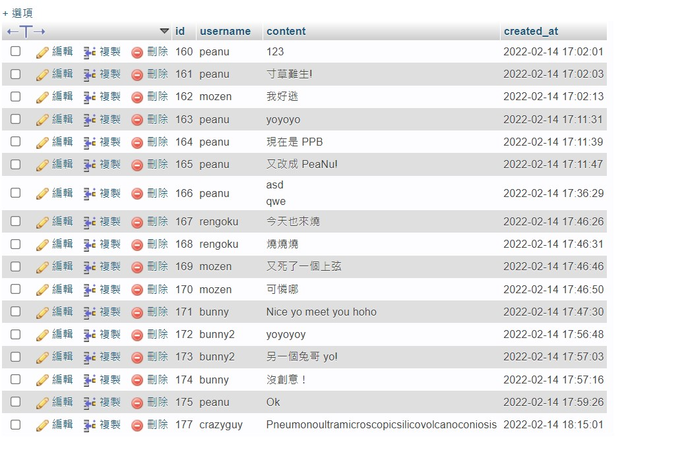
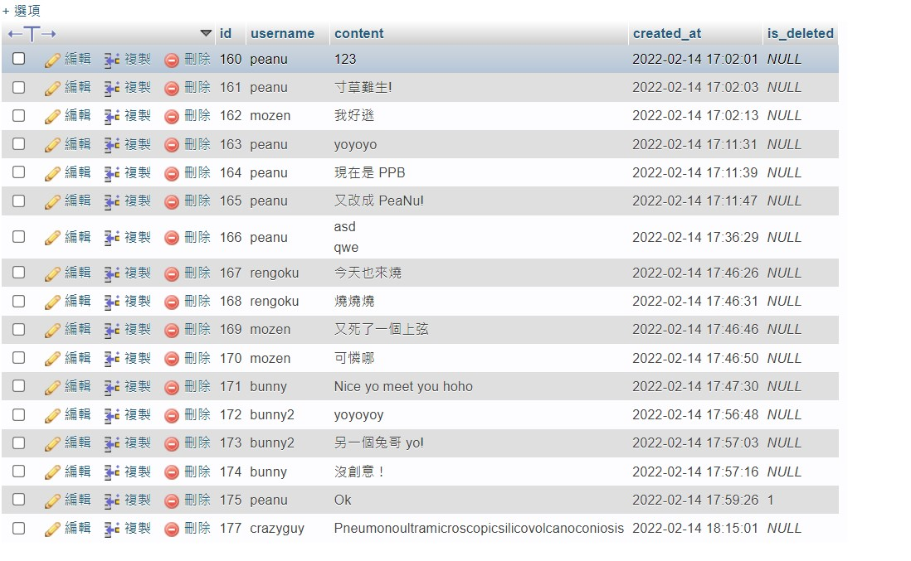
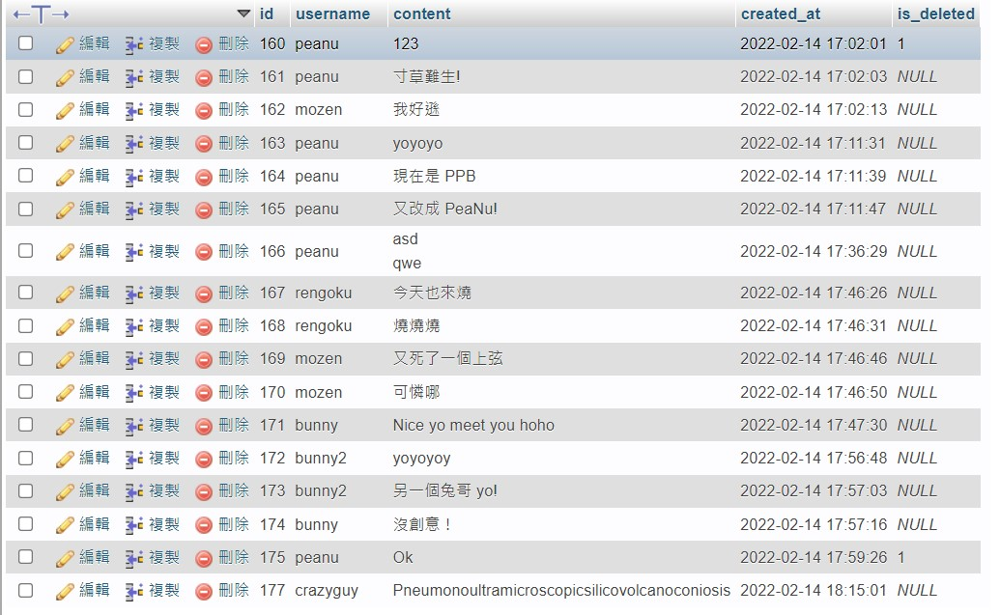

讓我想起 Git 裡的 git reset –soft –hard。
簡述
拿這個 table 來舉例：

hard delete
意思就是真的把資料庫裡的資料直接刪除
1 | DELETE FROM comments WHERE username='peanu'; |
執行完後 peanu 的留言就真的真的消失了，沒辦法復原。
soft delete
意思是用狀態來表示，而不是真的把資料刪掉。
通常會新增一個叫做 is_deleted 的欄位，用 0 或 1 來表示這個欄位是不是處於「刪除狀態」。如果真的不小心「誤刪」資料的話還有機會可以救回來。

要刪除欄位的話只要更新欄位狀態就可以了：
1 | UPDATE comments SET is_deleted=1 WHERE id=160; |

現在 id=160 的 is_delete 狀態變成 1，代表刪除。
根據狀態來過濾資料
補充一下要怎麼正確的過濾資料。如果不是用 0 1 來表示狀態的話，不能直接用 is_deleted != null 來選，而是要用 IS 或 IS NOT 來過濾。
例如要把被刪除的資料抓出來：
1 | SELECT * FROM `comments` WHERE is_deleted IS NOT null; |
如果想把沒被刪除的資料抓出來：
1 | SELECT * FROM `comments` WHERE is_deleted IS null; |
但如果是用 0 1 的話就可以直接 is_deleted !=0 或 is_deleted = 0 來抓資料。
被刪除的：
1 | SELECT * FROM `comments` WHERE is_deleted = 0; |
沒被刪除的：
1 | SELECT * FROM `comments` WHERE is_deleted != 0; |